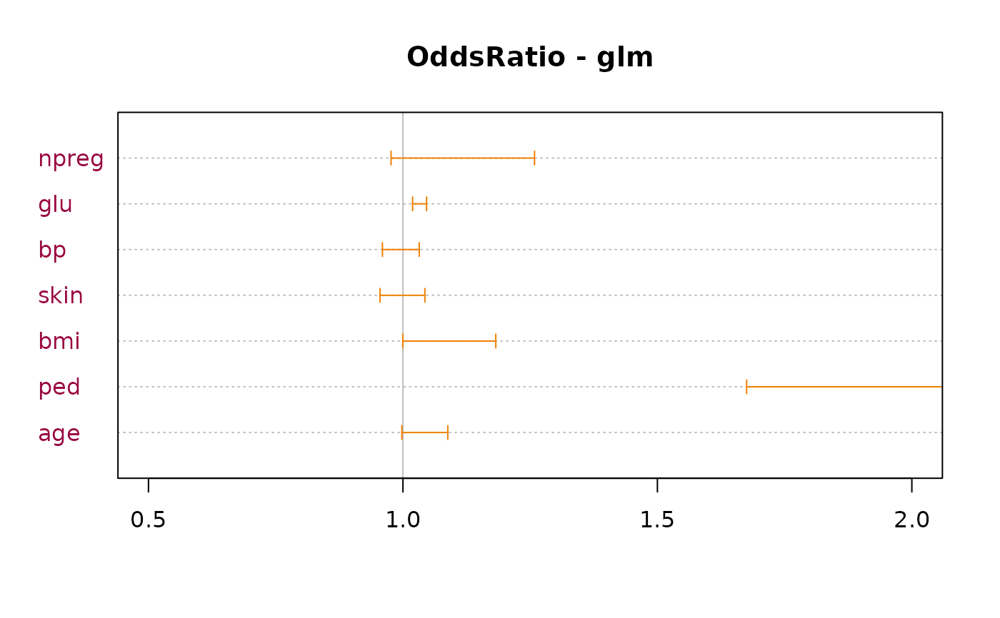

OddsRatio.RdCalculates odds ratio by unconditional maximum likelihood estimation (wald),
conditional maximum likelihood estimation (mle) or median-unbiased estimation (midp).
Confidence intervals are calculated using normal approximation (wald) and exact methods
(midp, mle).
OddsRatio(x, conf.level = NULL, ...) # S3 method for glm OddsRatio(x, conf.level = NULL, digits = 3, use.profile = TRUE, ...) # S3 method for multinom OddsRatio(x, conf.level = NULL, digits = 3, ...) # S3 method for zeroinfl OddsRatio(x, conf.level = NULL, digits = 3, ...) # S3 method for default OddsRatio(x, conf.level = NULL, y = NULL, method = c("wald", "mle", "midp"), interval = c(0, 1000), ...)
| x | a vector or a \(2 \times 2\) numeric matrix, resp. table. |
|---|---|
| y | NULL (default) or a vector with compatible dimensions to |
| digits | the number of fixed digits to be used for printing the odds ratios. |
| method | method for calculating odds ratio and confidence intervals. Can be one out of
" |
| conf.level | confidence level. Default is |
| interval | interval for the function |
| use.profile | logical. Defines if profile approach should be used, which normally is a good choice. Calculating profile can however take ages for large datasets and not be necessary there. So we can fallback to normal confidence intervals. |
| ... | further arguments are passed to the function |
If a \(2 \times 2\) table is provided the following table structure is preferred:
disease=0 disease=1
exposed=0 (ref) n00 n01
exposed=1 n10 n11
however, for odds ratios the following table is equivalent:
disease=1 disease=0
exposed=1 n11 n10
exposed=0 n01 n00
If the table to be provided to this function is not in the
preferred form, the function Rev() can be used to "reverse" the table rows, resp.
-columns. Reversing columns or rows (but not both) will lead to the inverse of the odds ratio.
In case of zero entries, 0.5 will be added to the table.
a single numeric value if conf.level is set to NA
a numeric vector with 3 elements for estimate, lower and upper confidence interval if conf.level is provided
Kenneth J. Rothman and Sander Greenland (1998): Modern Epidemiology, Lippincott-Raven Publishers
Kenneth J. Rothman (2002): Epidemiology: An Introduction, Oxford University Press
Nicolas P. Jewell (2004): Statistics for Epidemiology, 1st Edition, 2004, Chapman & Hall, pp. 73-81
Agresti, Alan (2013) Categorical Data Analysis. NY: John Wiley and Sons, Chapt. 3.1.1
Andri Signorell <andri@signorell.net>, strongly based on code from Tomas Aragon, <aragon@berkeley.edu>
# Case-control study assessing whether exposure to tap water # is associated with cryptosporidiosis among AIDS patients tab <- matrix(c(2, 29, 35, 64, 12, 6), 3, 2, byrow=TRUE) dimnames(tab) <- list("Tap water exposure" = c("Lowest", "Intermediate", "Highest"), "Outcome" = c("Case", "Control")) tab <- Rev(tab, margin=2) OddsRatio(tab[1:2,])#> [1] 7.929688#> [1] 29OddsRatio(tab[1:2,], method="mle")#> [1] 7.836979OddsRatio(tab[1:2,], method="midp")#> [1] 7.355436OddsRatio(tab[1:2,], method="wald", conf.level=0.95)#> odds ratio lwr.ci upr.ci #> 7.929688 1.785414 35.218699# in case of zeros consider using glm for calculating OR dp <- data.frame (a=c(20, 7, 0, 0), b=c(0, 0, 0, 12), t=c(1, 0, 1, 0)) fit <- glm(cbind(a, b) ~ t, data=dp, family=binomial) exp(coef(fit))#> (Intercept) t #> 0.5833333 648881105.1376113# calculation of log oddsratios in a 2x2xk table migraine <- xtabs(freq ~ ., cbind(expand.grid(treatment=c("active","placebo"), response=c("better","same"), gender=c("female","male")), freq=c(16,5,11,20,12,7,16,19)) ) log(apply(migraine, 3, OddsRatio))#> female male #> 1.7609878 0.7108468# OddsRatio table for logistic regression models r.glm <- glm(type ~ ., data=MASS::Pima.tr2, family=binomial) OddsRatio(r.glm)#>#> #> Call: #> glm(formula = type ~ ., family = binomial, data = MASS::Pima.tr2) #> #> Odds Ratios: #> or or.lci or.uci Pr(>|z|) #> (Intercept) 0.000 0.000 0.002 3.38e-08 *** #> npreg 1.109 0.978 1.263 0.1107 #> glu 1.033 1.020 1.047 2.22e-06 *** #> bp 0.995 0.959 1.032 0.7971 #> skin 0.998 0.957 1.045 0.9321 #> bmi 1.087 1.000 1.184 0.0509 . #> ped 6.174 1.728 23.681 0.0062 ** #> age 1.042 0.998 1.090 0.0623 . #> --- #> Signif. codes: 0 '***' 0.001 '**' 0.01 '*' 0.05 '.' 0.1 ' ' 1 #> #> Brier Score: 0.147 Nagelkerke R2: 0.447 #>plot(OddsRatio(r.glm), xlim=c(0.5, 2), main="OddsRatio - glm", pch=NA, lblcolor=hred, args.errbars=list(col=horange, pch=21, col.pch=hblue, bg.pch=hyellow, cex.pch=1.5))#>